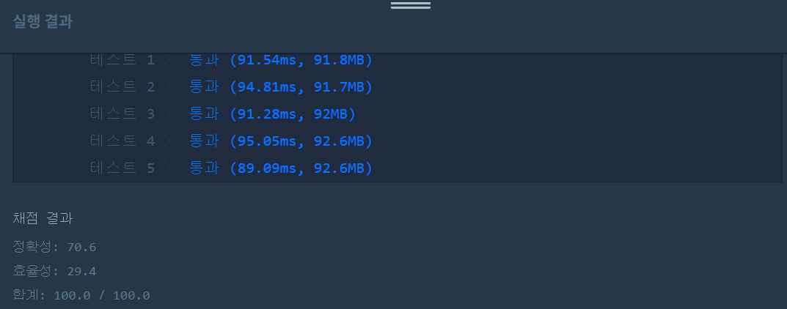
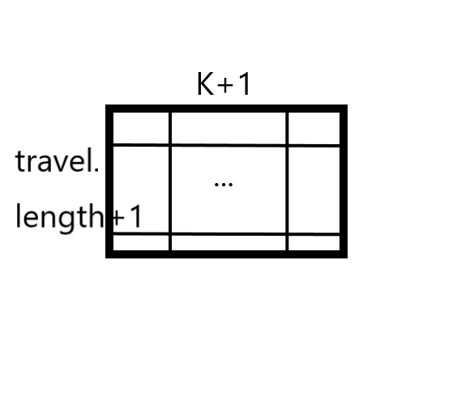

문제
https://programmers.co.kr/learn/courses/30/lessons/42899
( ᐛ )و 도전
1. 설계
- i번째 도시 j분까지의 최대 모금액을 저장할 배열을 생성한다.
- 현재 도시의 도보, 자전거 중 큰 모금액을 선택한다.
- 이전 도시까지의 모금액에 더한다.
2. 구현 (성공 코드)
/**
*
* @author HEESOO
*
*/
class Solution {
public int solution(int K, int[][] travel) {
int answer = 0;
int[][] dp=new int[travel.length+1][K+1];
int money;
int wT, wM, bT, bM;//walkTime,Money, bikeTime,Money
for(int i=1;i<travel.length+1;i++){//위치
for(int j=0;j<K+1;j++){//시간
money=-1;
wT=travel[i-1][0];
wM=travel[i-1][1];
bT=travel[i-1][2];
bM=travel[i-1][3];
//둘 중 최대 모금액 체크
if(j-wT>=0&&wM+dp[i-1][j-wT]>money){//도보
money=wM+dp[i-1][j-wT];
}
if(j-bT>=0&&bM+dp[i-1][j-bT]>money){//자전거
money=bM+dp[i-1][j-bT];
}
dp[i][j]=money==-1? Integer.MAX_VALUE:money;//시간초과로 방문할수없다면 MAX저장, i번째도시 j분까지의 최대 모금액 저장
}
}
answer=dp[travel.length][K];
return answer;
}
}
3. 결과
 성공٩(˘◊˘)۶
4. 설명
- for문에서 j는 0분부터 K분까지 모두 순회한다.
- 0분부터 시작해서 K까지 증가하며 이전에 방문한 도시가 있는지 체크한다. 있다면 현재 dp[i][j]는 유효하다는 뜻이다. 없다면 현재 dp는 방문할 수 없는 조건이라는 뜻이다.
- 이전 도시가 있다면 거기까지의 최댓값에 현재에서 얻을 수 있는 최댓값을 더하는 식으로 알고리즘이 전개된다.
- 참고로 i는 dp를 통해 이전 도시까지의 최댓값을 알아야하므로 i-1을 사용해야하고, 따라서 1부터 시작한다.
- 현재 위치에서 도보와 자전거 중 최대 모금액을 찾는다.
- 이때 money에 이전 위치까지의 모금액을 포함해 최댓값을 저장한다.
- 최대 금액은 이전 위치까지의 모금액에 따라 달라진다. 단순히 현재 위치에서 도보와 자전거 금액을 비교해선 안된다.
- 이전까지의 모금액을 알기 위해 dp[i-1][j-wT]를 방문한다. 이때 i-1은 이전 위치, j-wT는 현재 시간j에서 도보시간wT를 뺀 값이다. 그러면 이전 시간으로 돌아갈 수 있다.
- j-wT가 인덱스 범위를 벗어나지 않도록 체크하는 것이 &&앞의 조건문이다.
- 인덱스 범위를 벗어난다면 money에는 값이 갱신되지 않는다. 이 경우는 dp[i][j]가 travel의 위치, 시간에 포함되지 않는 경우이다. 우리는 dp배열 크기를 모두 사용하지 않는다. dp배열을 [travel.length+1][K+1]로 선언한 이유는 마지막에 도착하는 [travel.length][K]를 사용하기 위해서이다. 테스트1을 예로 들었을때, 우리는 dp[1][3]은 사용하지 않는다. 도시1일때 3초인 경우는 없다. 이 경우 if문을 만족하지 않아 money가 갱신되지 않는다. 결국 방문할 수 없는 조건이라는 뜻이다. 
- 결국 위 배열 사이에 Integer.MAX_VALUE의 뜻은 dp[i][j]가 방문할 수 없는 잘못된 조건이라는 뜻이고, 해당 위치에 방문했다는 뜻은 특정 j에서 이전에 방문한 도시가 존재하는지 확인하러 왔다는 것인데, MAX가 있으므로 지금 j 위치로 올 수 있는 경우는 없다고 알게 된다.
- dp[i][j]에 최대 모금액을 저장한다.
- 위에서 if문을 실행했다면 money에는 -1 또는 도보, 자전거를 포함한 모금액이 들어갔을 것이다.
- -1인 경우에는 Integer.MAX_VALUE로 int최댓값을 저장해야한다. 나중에 dp[i][j]를 방문했을때 가장 큰 값이 들어가야 money의 갱신이 일어나지 않기 떄문이다.
- dp[travel.length][K]에 최댓값이 저장된다.
- 해당 값을 answer로 리턴하면 된다.
- 사실 이해가 안된다. i야 그렇다 치고 K분 이전에 도착하는게 최적일 수 있는데 그러면 항상 dp[travel.length][K]에 들어간다고 할 수 없지 않나?
해결 완료!
어렵다 어려워…모든 경우의 수를 생각해야하므로 당연히 재귀를 호출할 것이라고 생각했는데, 다른 사람들의 풀이과정에서 재귀를 한 번도 못봤다. 그리고 이게 초등부 문제라니 도대체 2000년대에 무슨 일이 있었던거지
참고
- 서울에서 경산까지 https://webfirewood.tistory.com/97